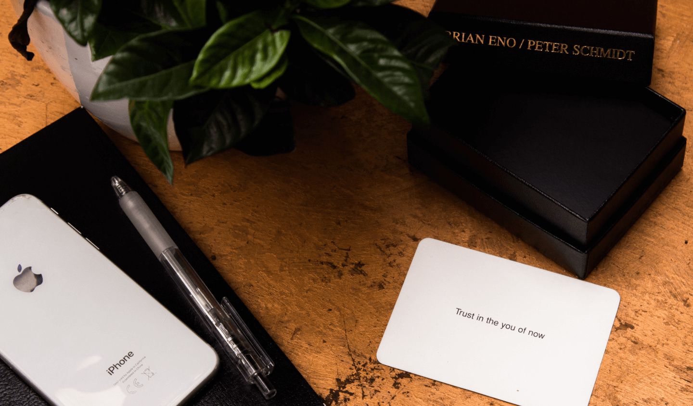

Новый взгляд
old idea становится опорой для совершенно свежего решения, если посмотреть на неё под другим углом.
В 1975 году музыкант Брайан Ино и художник Питер Шмидт выпустили колоду карт «Oblique Strategies» — больше сотни коротких фраз и загадочных подсказок, которые помогают выбраться из творческого тупика. Карту вытягивают не глядя и применяют её совет к любой задаче, над которой сейчас работаешь: от музыкальной партии до макета интерфейса.
Сегодня у колоды есть официальное приложение, которое повторяет бумажный опыт на экране телефона. Установить его можно в обоих крупных магазинах приложений: iOS и Android.
Правило всего одно: нельзя заранее выбирать карту. Это и есть суть метода — решение приходит со стороны, а не из уже знакомого хода мыслей, в котором застряла работа. Иногда подсказка звучит почти абсурдно, и именно это заставляет посмотреть на задачу иначе.
«Довеpься себе нынешнему» — одна из самых известных карт колоды: напоминание не искать идеального решения, а довериться тому пониманию задачи, которое есть прямо сейчас.

Из бумажной колоды в карман телефона формулировки перекочевали почти без изменений — создатели приложения специально сохранили исходный тон подсказок, пусть он и звучит отстранённо. Карту можно вытянуть в любой момент одним касанием, а история уже просмотренных подсказок сохраняется, чтобы не повторяться слишком часто.
Долгое время единственным способом воспользоваться методом оставалась физическая колода — её тиражи быстро заканчивались, а переиздания стоили дорого. Приложение сняло это ограничение: подсказка всегда под рукой, без обязательного ритуала разложить карты на столе.
old idea становится опорой для совершенно свежего решения, если посмотреть на неё под другим углом.